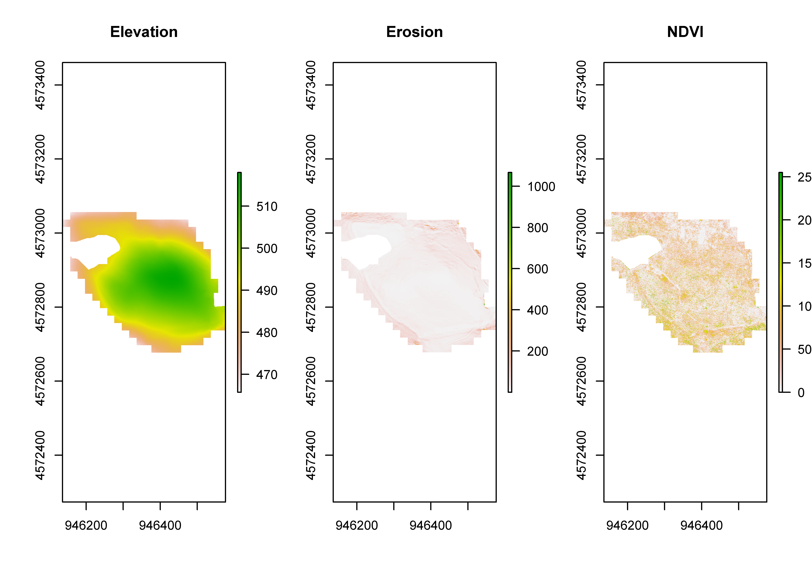
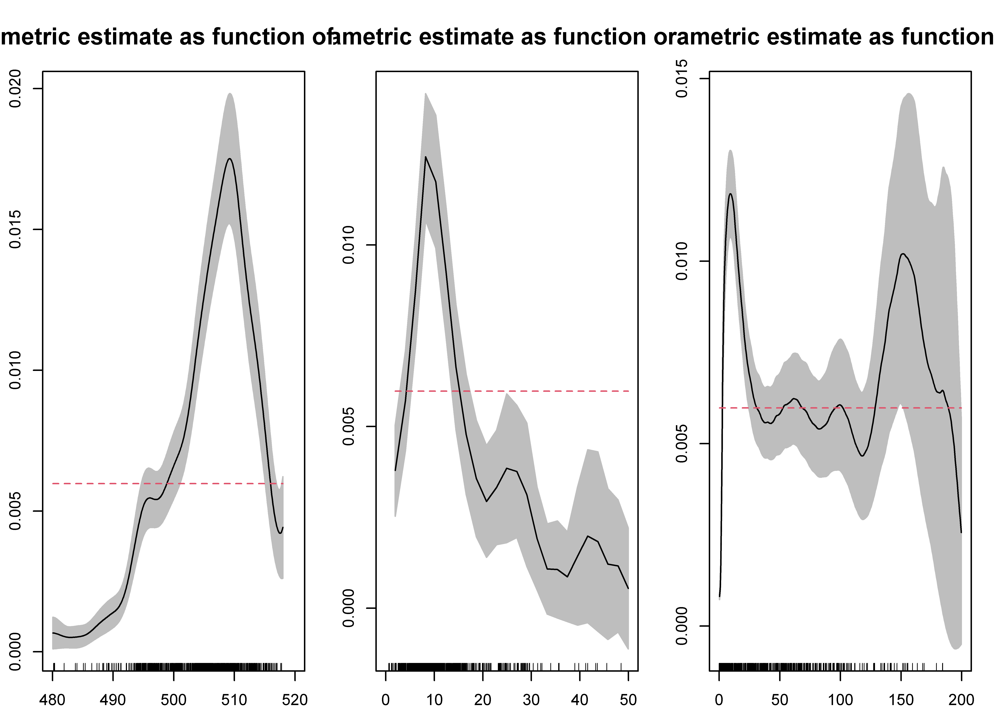
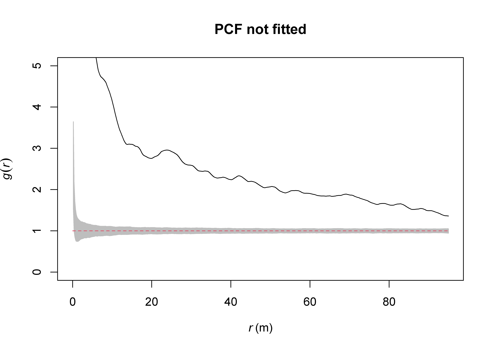
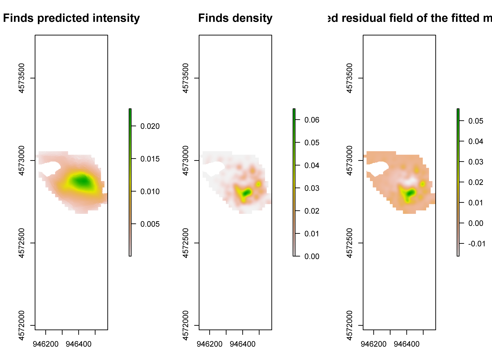
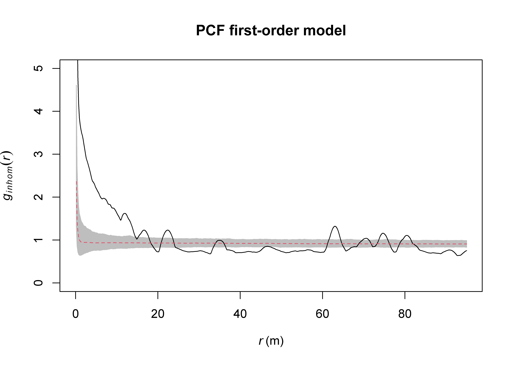
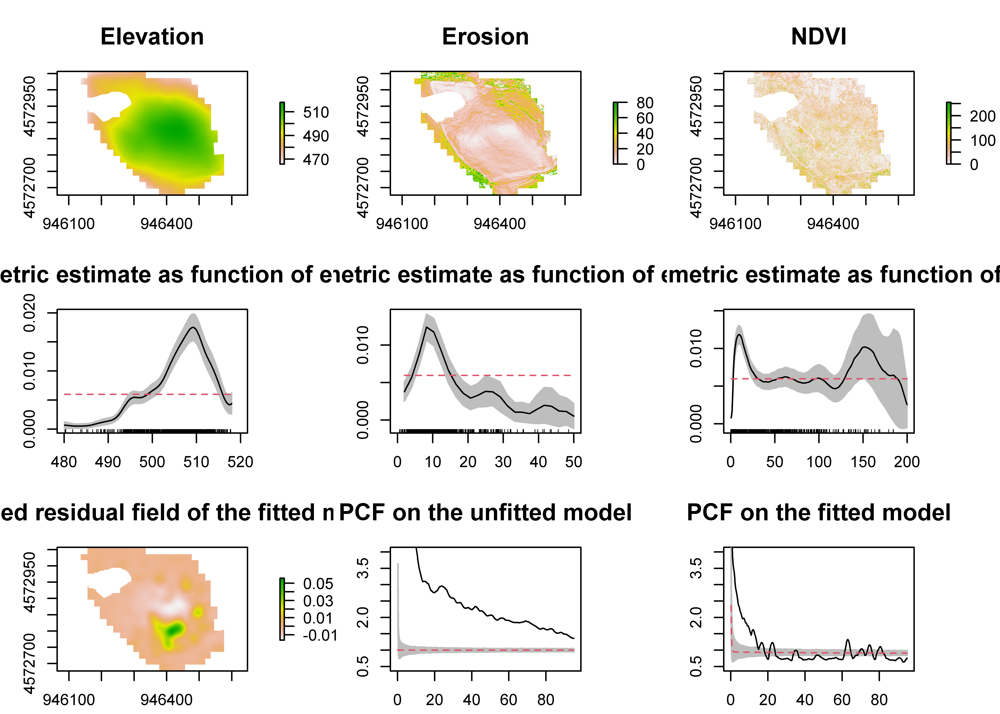

Intrasite Analysis of Recovery Biases for Artifact Identification
1 Data preparation
Reading layer `AHS23_finds_32N' from data source
`C:\Users\giaco\OneDrive - University College London\PhD\Data\R\PPM_Intrasite\input\vector\AHS23_finds_32N.shp'
using driver `ESRI Shapefile'
Simple feature collection with 645 features and 2 fields
Geometry type: POINT
Dimension: XY
Bounding box: xmin: 946185.2 ymin: 4572682 xmax: 946562.6 ymax: 4573020
Projected CRS: WGS 84 / UTM zone 32NReading layer `limits_32N' from data source
`C:\Users\giaco\OneDrive - University College London\PhD\Data\R\PPM_Intrasite\input\vector\limits_32N.shp'
using driver `ESRI Shapefile'
Simple feature collection with 1 feature and 1 field
Geometry type: POLYGON
Dimension: XY
Bounding box: xmin: 946136.1 ymin: 4572677 xmax: 946576.1 ymax: 4573057
Projected CRS: WGS 84 / UTM zone 32N2 Erosion modelling
# print
par(mfrow=c(1,3))
plot(dem, main = "Elevation")
plot(erosion, main = "Erosion")
plot(ndvi, main = "NDVI")
jpeg(res=600, width = 14, height = 4.45, units = 'in', filename="output/figure/covariates.jpg")
par(mfrow=c(1,3))
plot(dem, main = "Elevation", cex.main = 1.5)
plot(erosion, main = "Erosion", cex.main = 1.5, zlim = c(0, 80))
plot(ndvi, main = "NDVI", cex.main = 1.5)
dev.off()png
2 3 Point process model
3.1 Exploratory analysis
rhlist <- list()
for (i in 1:length(covlist)) {
rh <- rhohat(pts, covlist[[i]], confidence=0.95)
rhlist[[length(rhlist) + 1]] <- rh
}
names(rhlist) <- covnames
rm(rh)
# plot
par(mfrow=c(1,3))
par(mai = c(0.3, 0.3, 0.5, 0.2)) # bottom, left, top, right
plot(rhlist$dem, main="Nonparametric estimate as function of elevation", cex.main = 1.5, xlim=c(480,520), xlab="", ylab="", legend=F)
plot(rhlist$erosion, main="Nonparametric estimate as function of erosion", cex.main = 1.5, xlim=c(0,50), xlab="", ylab="", legend=F)
plot(rhlist$ndvi, main="Nonparametric estimate as function of NDVI", cex.main = 1.5, xlim=c(0,200), xlab="", ylab="", legend=F)
# print
jpeg(res=600, width = 14, height = 3, units = 'in', filename="output/figure/rhohat.jpg")
par(mfrow=c(1,3))
par(mai = c(0.3, 0.3, 0.5, 0.2)) # bottom, left, top, right
plot(rhlist$dem, main="Nonparametric estimate as function of elevation", cex.main = 1.5, xlim=c(480,520), xlab="", ylab="", legend=F)
plot(rhlist$erosion, main="Nonparametric estimate as function of erosion", cex.main = 1.5, xlim=c(0,50), xlab="", ylab="", legend=F)
plot(rhlist$ndvi, main="Nonparametric estimate as function of NDVI", cex.main = 1.5, xlim=c(0,200), xlab="", ylab="", legend=F)
dev.off()png
2 Generating 999 simulations of CSR ...
1, 2, 3, ......10 [etd 13:01] .........20 [etd 11:19] .........
30 [etd 11:11] .........40 [etd 10:59] .........50 [etd 10:42] ........
.60 [etd 10:23] .........70 [etd 10:18] .........80 [etd 10:08] .......
..90 [etd 10:01] .........100 [etd 9:57] .........110 [etd 9:48] ......
...120 [etd 9:41] .........130 [etd 9:34] .........140 [etd 9:24] .....
....150 [etd 9:16] .........160 [etd 9:08] .........170 [etd 9:02] ....
.....180 [etd 8:55] .........190 [etd 8:49] .........200 [etd 8:42] ...
......210 [etd 8:36] .........220 [etd 8:30] .........230 [etd 8:23] ..
.......240 [etd 8:16] .........250 [etd 8:09] .........260 [etd 8:03] .
........270 [etd 7:56] .........280 [etd 7:50] .........290
[etd 7:45] .........300 [etd 7:38] .........310 [etd 7:31] .........
320 [etd 7:25] .........330 [etd 7:18] .........340 [etd 7:12] ........
.350 [etd 7:04] .........360 [etd 6:57] .........370 [etd 6:51] .......
..380 [etd 6:45] .........390 [etd 6:38] .........400 [etd 6:31] ......
...410 [etd 6:24] .........420 [etd 6:21] .........430 [etd 6:29] .....
....440 [etd 6:31] .........450 [etd 6:26] .........460 [etd 6:20] ....
.....470 [etd 6:16] .........480 [etd 6:10] .........490 [etd 6:04] ...
......500 [etd 5:58] .........510 [etd 5:52] .........520 [etd 5:45] ..
.......530 [etd 5:38] .........540 [etd 5:31] .........550 [etd 5:23] .
........560 [etd 5:16] .........570 [etd 5:09] .........580
[etd 5:01] .........590 [etd 4:54] .........600 [etd 4:46] .........
610 [etd 4:38] .........620 [etd 4:31] .........630 [etd 4:23] ........
.640 [etd 4:16] .........650 [etd 4:08] .........660 [etd 4:01] .......
..670 [etd 3:54] .........680 [etd 3:46] .........690 [etd 3:39] ......
...700 [etd 3:32] .........710 [etd 3:24] .........720 [etd 3:17] .....
....730 [etd 3:10] .........740 [etd 3:03] .........750 [etd 2:56] ....
.....760 [etd 2:48] .........770 [etd 2:41] .........780 [etd 2:34] ...
......790 [etd 2:27] .........800 [etd 2:20] .........810 [etd 2:12] ..
.......820 [etd 2:05] .........830 [etd 1:58] .........840 [etd 1:51] .
........850 [etd 1:44] .........860 [etd 1:37] .........870
[etd 1:30] .........880 [etd 1:23] .........890 [etd 1:16] .........
900 [etd 1:09] .........910 [etd 1:02] .........920 [etd 55 sec] ........
.930 [etd 48 sec] .........940 [etd 41 sec] .........950 [etd 34 sec] .......
..960 [etd 27 sec] .........970 [etd 20 sec] .........980 [etd 13 sec] ......
...990 [etd 6 sec] ........ 999.
Done.
3.2 First-order
mod1 <- ppm(pts, trend= ~ dem.im + erosion.im + ndvi.im, interaction=NULL, correction="iso")
summary(mod1)Point process model
Fitting method: maximum likelihood (Berman-Turner approximation)
Model was fitted using glm()
Algorithm converged
Call:
ppm.ppp(Q = pts, trend = ~dem.im + erosion.im + ndvi.im, interaction = NULL,
correction = "iso")
Edge correction: "isotropic"
--------------------------------------------------------------------------------
Quadrature scheme (Berman-Turner) = data + dummy + weights
Data pattern:
Planar point pattern: 644 points
Average intensity 0.00597 points per square m
Window: polygonal boundary
single connected closed polygon with 109 vertices
enclosing rectangle: [946136.1, 946576.1] x [4572677, 4573057] m
(440 x 380 m)
Window area = 107786 square m
Unit of length: 1 m
Fraction of frame area: 0.645
Dummy quadrature points:
64 x 64 grid of dummy points, plus 4 corner points
dummy spacing: 6.8750 x 5.9375 m
Original dummy parameters: =
Planar point pattern: 2710 points
Average intensity 0.0251 points per square m
Window: polygonal boundary
single connected closed polygon with 109 vertices
enclosing rectangle: [946136.1, 946576.1] x [4572677, 4573057] m
(440 x 380 m)
Window area = 107786 square m
Unit of length: 1 m
Fraction of frame area: 0.645
Quadrature weights:
(counting weights based on 64 x 64 array of rectangular tiles)
All weights:
range: [2.4, 40.8] total: 107000
Weights on data points:
range: [2.4, 20.4] total: 8820
Weights on dummy points:
range: [2.4, 40.8] total: 98600
--------------------------------------------------------------------------------
FITTED MODEL:
Nonstationary Poisson process
---- Intensity: ----
Log intensity: ~dem.im + erosion.im + ndvi.im
Model depends on external covariates 'dem.im', 'erosion.im' and 'ndvi.im'
Covariates provided:
dem.im: im
erosion.im: im
ndvi.im: im
Fitted trend coefficients:
(Intercept) dem.im erosion.im ndvi.im
-7.48620487 3.69663873 -6.20655362 0.01731284
Estimate S.E. CI95.lo CI95.hi Ztest Zval
(Intercept) -7.48620487 0.2095590 -7.8969330 -7.075477 *** -35.72361280
dem.im 3.69663873 0.2462823 3.2139342 4.179343 *** 15.00976011
erosion.im -6.20655362 3.7825367 -13.6201893 1.207082 -1.64084426
ndvi.im 0.01731284 0.2501674 -0.4730063 0.507632 0.06920501
----------- gory details -----
Fitted regular parameters (theta):
(Intercept) dem.im erosion.im ndvi.im
-7.48620487 3.69663873 -6.20655362 0.01731284
Fitted exp(theta):
(Intercept) dem.im erosion.im ndvi.im
5.607671e-04 4.031158e+01 2.016174e-03 1.017464e+00
Problem:
Values of the covariate 'erosion.im' were NA or undefined at 0.39% (13 out of 3354) of the quadrature points # plot
par(mfrow=c(1,3))
par(mai = c(0.3, 0.5, 0.5, 0.8)) # bottom, left, top, right
plot(raster(predict(mod1)), main="Finds predicted intensity", cex.main = 1.5)
plot(raster(density(pts, sigma=12)), main="Finds density", cex.main = 1.5)
plot(raster(Smooth(residuals(mod1), sigma=12)), main="Smoothed residual field of the fitted model", cex.main = 1.5)
# print
jpeg(res=600, width = 14, height = 4, units = 'in', filename="output/figure/densities.jpg")
par(mfrow=c(1,3))
par(mai = c(0.3, 0.5, 0.5, 0.8)) # bottom, left, top, right
plot(raster(predict(mod1)), main="Finds predicted intensity", cex.main = 1.5)
plot(raster(density(pts, sigma=12)), main="Finds density", cex.main = 1.5)
plot(raster(Smooth(residuals(mod1), sigma=12)), main="Smoothed residual field of the fitted model", cex.main = 1.5)
dev.off()png
2 Smoothed residual field: positive values of s(u) suggest that there is an overabundance of data points relative to the prediction of the model, that is, they suggest that the model underestimates the true intensity. Negative values of s(u) suggest that the model overestimates the true intensity.
mod1.a <- ppm(pts, trend= ~ dem.im + erosion.im, interaction=NULL, correction="iso") # without ndvi
mod1.b <- ppm(pts, trend= ~ dem.im + erosion.im + ndvi.im, interaction=NULL, correction="iso") # with ndvi
# test
likelihood_ratio <- anova(mod1.a, mod1.b)
LR <- likelihood_ratio$Deviance[2]
df <- likelihood_ratio$Df[2]
p.value.SCH <- 1 - pchisq(LR, df)
print(p.value.SCH)[1] 0.9448648set.seed(123)
Pcfinhom_mod1 <- envelope(mod1, fun=pcfinhom, correction="iso", nsim=numSims, nrank=numRank)Generating 999 simulated realisations of fitted Poisson model ...
1, 2, 3, ......10 [etd 14:04] .........20 [etd 15:47] .........
30 [etd 16:09] .........40 [etd 15:28] .........50 [etd 15:23] ........
.60 [etd 16:14] .........70 [etd 16:33] .........80 [etd 16:50] .......
..90 [etd 16:40] .........100 [etd 16:24] .........110 [etd 16:24] ......
...120 [etd 16:14] .........130 [etd 16:08] .........140 [etd 15:55] .....
....150 [etd 15:31] .........160 [etd 15:10] .........170 [etd 14:48] ....
.....180 [etd 14:27] .........190 [etd 14:08] .........200 [etd 13:49] ...
......210 [etd 13:33] .........220 [etd 13:17] .........230 [etd 13:01] ..
.......240 [etd 12:45] .........250 [etd 12:33] .........260 [etd 12:21] .
........270 [etd 12:08] .........280 [etd 11:54] .........290
[etd 11:41] .........300 [etd 11:30] .........310 [etd 11:21] .........
320 [etd 11:11] .........330 [etd 11:01] .........340 [etd 10:49] ........
.350 [etd 10:38] .........360 [etd 10:28] .........370 [etd 10:17] .......
..380 [etd 10:06] .........390 [etd 9:55] .........400 [etd 9:43] ......
...410 [etd 9:32] .........420 [etd 9:21] .........430 [etd 9:10] .....
....440 [etd 8:59] .........450 [etd 8:48] .........460 [etd 8:37] ....
.....470 [etd 8:27] .........480 [etd 8:16] .........490 [etd 8:05] ...
......500 [etd 7:55] .........510 [etd 7:45] .........520 [etd 7:35] ..
.......530 [etd 7:25] .........540 [etd 7:15] .........550 [etd 7:05] .
........560 [etd 6:55] .........570 [etd 6:45] .........580
[etd 6:35] .........590 [etd 6:24] .........600 [etd 6:14] .........
610 [etd 6:04] .........620 [etd 5:54] .........630 [etd 5:44] ........
.640 [etd 5:34] .........650 [etd 5:25] .........660 [etd 5:15] .......
..670 [etd 5:05] .........680 [etd 4:56] .........690 [etd 4:46] ......
...700 [etd 4:36] .........710 [etd 4:27] .........720 [etd 4:17] .....
....730 [etd 4:08] .........740 [etd 3:59] .........750 [etd 3:50] ....
.....760 [etd 3:40] .........770 [etd 3:31] .........780 [etd 3:22] ...
......790 [etd 3:12] .........800 [etd 3:03] .........810 [etd 2:54] ..
.......820 [etd 2:45] .........830 [etd 2:36] .........840 [etd 2:26] .
........850 [etd 2:17] .........860 [etd 2:09] .........870
[etd 2:01] .........880 [etd 1:53] .........890 [etd 1:45] .........
900 [etd 1:35] .........910 [etd 1:26] .........920 [etd 1:16] ........
.930 [etd 1:07] .........940 [etd 57 sec] .........950 [etd 48 sec] .......
..960 [etd 38 sec] .........970 [etd 28 sec] .........980 [etd 19 sec] ......
...990 [etd 9 sec] ........ 999.
Done.
jpeg(res=600, width = 14, height = 3, units = 'in', filename="output/figure/pcf.jpg")
par(mfrow=c(1,2))
par(mai = c(0.4, 0.5, 0.3, 0)) # bottom, left, top, right
plot(Pcf.pts, ylim=c(0,8), legend=FALSE, main="PCF not fitted model")
plot(Pcfinhom_mod1, ylim=c(0,4), legend=FALSE, main="PCF first-order model")
dev.off()png
2 4 Summary image
# plot
par(mfrow=c(3,3))
par(mai = c(0.3, 0.4, 0.5, 0.6)) # bottom, left, top, right
plot(dem, main = "Elevation", cex.main = 1.5)
plot(erosion, main = "Erosion", cex.main = 1.5, zlim = c(0, 80))
plot(ndvi, main = "NDVI", cex.main = 1.5)
par(mai = c(0.3, 0.4, 0.5, 0.6)) # bottom, left, top, right
plot(rhlist$dem, main="Nonparametric estimate as function of elevation", cex.main = 1.5, xlim=c(480,520), xlab="", ylab="", legend=F)
plot(rhlist$erosion, main="Nonparametric estimate as function of erosion", cex.main = 1.5, xlim=c(0,50), xlab="", ylab="", legend=F)
plot(rhlist$ndvi, main="Nonparametric estimate as function of NDVI", cex.main = 1.5, xlim=c(0,200), xlab="", ylab="", legend=F)
par(mai = c(0.3, 0.4, 0.5, 0.6)) # bottom, left, top, right
plot(raster(Smooth(residuals(mod1), sigma=12)), main="Smoothed residual field of the fitted model", cex.main = 1.5)
plot(Pcf.pts, ylim=c(0.5,4), xlab="", ylab="", legend=FALSE, main="PCF on the unfitted model", cex.main = 1.5)
plot(Pcfinhom_mod1, ylim=c(0.5,4), xlab="", ylab="", legend=FALSE, main="PCF on the fitted model", cex.main = 1.5)
jpeg(res=600, width = 14, height = 11, units = 'in', filename="output/figure/mosaic.jpg")
par(mfrow=c(3,3))
par(mai = c(0.3, 0.4, 0.5, 0.6)) # bottom, left, top, right
plot(dem, main = "Elevation", cex.main = 1.5)
plot(erosion, main = "Erosion", cex.main = 1.5, zlim = c(0, 80))
plot(ndvi, main = "NDVI", cex.main = 1.5)
par(mai = c(0.3, 0.4, 0.5, 0.6)) # bottom, left, top, right
plot(rhlist$dem, main="Nonparametric estimate as function of elevation", cex.main = 1.5, xlim=c(480,520), xlab="", ylab="", legend=F)
plot(rhlist$erosion, main="Nonparametric estimate as function of erosion", cex.main = 1.5, xlim=c(0,50), xlab="", ylab="", legend=F)
plot(rhlist$ndvi, main="Nonparametric estimate as function of NDVI", cex.main = 1.5, xlim=c(0,200), xlab="", ylab="", legend=F)
par(mai = c(0.3, 0.4, 0.5, 0.6)) # bottom, left, top, right
plot(raster(Smooth(residuals(mod1), sigma=12)), main="Smoothed residual field of the fitted model", cex.main = 1.5)
plot(Pcf.pts, ylim=c(0.5,4), xlab="", ylab="", legend=FALSE, main="PCF on the unfitted model", cex.main = 1.5)
plot(Pcfinhom_mod1, ylim=c(0.5,4), xlab="", ylab="", legend=FALSE, main="PCF on the fitted model", cex.main = 1.5)
dev.off()png
2